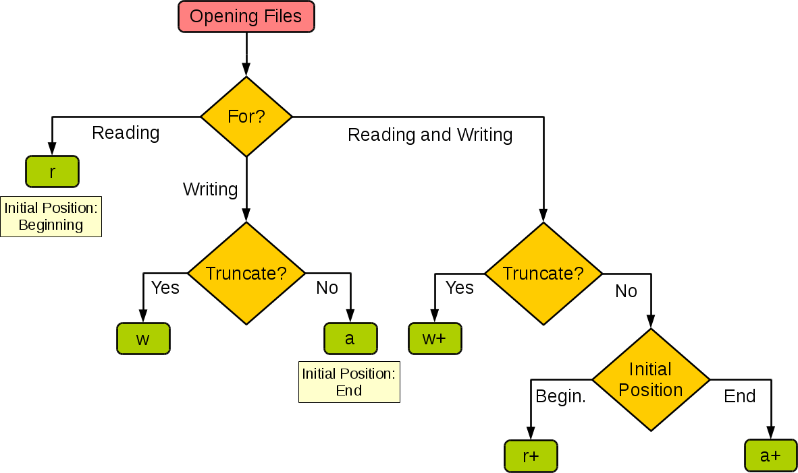

Python 2 和 Python 3 的差异（这里写15个）
- __future__模块：如果在想在python2中使用python3的一些关键字或特性，可以使用python2中内置的__future__模块导入，如想在python2中使用python3的输出模块，可以使用from __future__ import print_function
- print：python2中print是一个特殊语句，在python3中该语句没有了，取而代之的是print()函数
- 异常捕获：python2中捕获异常的语法是except exc, var python3中改为了except exc as var
- 除法运算：python2整数相除的结果是一个整数，python3是一个浮点数
- 编码：python2中使用ascii编码，python中使用utf-8编码
- 输入函数：python2中是raw_input()函数，python3中是input()函数
- range：python2中range()返回列表，python3中返回迭代器
- xrange：Python3中，range()是像xrange()那样实现，不存在一个专门的xrange()函数
- 不等号运算：Python2中不等于有两种写法 != 和 <>，Python3中去掉了<>, 只有!=一种写法
- repr反引号：Python2中反引号相当于repr函数的作用，Python3中去掉了反引号这种写法，只允许使用repr函数
- 模块命名变化：如ConfigParser变成了configparser，SocketServer变成了socketserver
- 模块合并：python2中的StringIO和cStringIO合并为python3中的io，python2中的pickle和cPickle合并为python3中的pickle，python2中的urllib、urllib2和urlparse合并为python3中的urllib
- 字典：python2中的dict类中的keys、values和items均返回list对象，iterkeys、itervalues和iteritems返回生成器对象，python3中只返回一个生成器的对象，方法名为keys、values和items。
- 申明原类：python2中声明元类：metaclass = MetaClass，python3中声明元类：class newclass(metaclass=MetaClass):pass
- 字符串类型
| 版本 | python2 | python3 |
|---|---|---|
| 字节字符串 | str | bytes |
| 文本字符串 | Unicode | str |
read、readline、readlines读取文件的区别
- read 读取整个文件
- readline 读取下一行,使用生成器方法
- readlines 读取整个文件到一个迭代器以供我们遍历
r、r+、rb、rb+等文件打开模式的区别
r和w的用一张图表示，后面加b的是二进制文件，其他相同。

列出python中主要可变数据类型和不可变数据类型并解释原理
不可变数据类型：int，float，string，tuple等
不允许变量的值发生变化，如果改变了变量的值，相当于是新建了一个对象（一个地址），相同值的对象，在内存中只有一个。
a = 1
print(id(a), a)
b = 2
print(id(b), b)4427273360 1
4427273392 2可变数据类型：list，dict，set，
允许变量的值发生变化，如对list执行append操作，只是改变了list的值，而不会新建一个对象，变量引用的对象的地址也不会变化，相同的值的不同对象，在内存中则会存在不同的对象。
a = [1, 2]
print(id(a), a)
a.append(3)
print(id(a), a)
b = [1, 2]
print(id(b), b)4489262656 [1, 2]
4489262656 [1, 2, 3]
4495298720 [1, 2]python传参数是传值还是传址
Python的参数传递有：位置参数、默认参数、可变参数、关键字参数。
函数的传值到底是值传递还是引用传递、要分情况：
不可变参数用值传递：像整数和字符串这样的不可变对象，是通过拷贝进行传递的，因为你无论如何都不可能在原处改变不可变对象。
可变参数是引用传递：比如像列表，字典这样的对象是通过引用传递、和C语言里面的用指针传递数组很相似，可变对象能在函数内部改变。
什么是lambda函数，有什么好处
lambda函数是匿名函数，是一个可以接收任意多个参数(包括可选参数)并且返回单个表达式值的函数。这种函数得名于省略了用def声明函数的标准步骤。
- lambda函数比较轻便，即用即仍，很适合需要完成一项功能，但是此功能只在此一处使用
匿名函数，一般用来给filter，map这样的函数式编程服务
作为回调函数，传递给某些应用，比如消息处理
如何在函数内部修改全局变量并解释原理
把id打出来一目了然
a = 1
def func1():
a = 2
print(id(a), id(2))
print(id(a), id(1))
func1()
print(id(a), id(1))
print(a)4427273360 4427273360
4427273392 4427273392
4427273360 4427273360
1a = 1
def func2():
global a
a = 2
print(id(a), id(2))
print(id(a), id(1))
func2()
print(id(a), id(1))
print(a)4427273360 4427273360
4427273392 4427273392
4427273392 4427273360
2python中断言
a = 1
while True:
assert(a < 5)
print("断言成功，继续，a等于%d" % a)
a += 1断言成功，继续，a等于1
断言成功，继续，a等于2
断言成功，继续，a等于3
断言成功，继续，a等于4
---------------------------------------------------------------------------
AssertionError Traceback (most recent call last)
<ipython-input-13-7bc103f31806> in <module>
1 a = 1
2 while True:
----> 3 assert(a < 5)
4 print("断言成功，继续，a等于%d" % a)
5 a += 1
AssertionError: 自定义异常
def func(num):
try:
for i in range(num):
print(i)
if i > 2:
raise Exception("数字大于2了，最新数字为%d" % i)
except Exception as e:
print(e)
func(5)0
1
2
3
数字大于2了，最新数字为3主要的异常
- IOError：输入输出异常
- AttributeError：试图访问一个对象没有的属性
- ImportError：无法引入模块或包，基本是路径问题
- IndentationError：语法错误，代码没有正确的对齐
- IndexError：下标索引超出序列边界
- KeyError：试图访问你字典里不存在的键
- SyntaxError：Python代码逻辑语法出错，不能执行
- NameError：使用一个还未赋予对象的变量
异常模块中try except else finally的相关意义
- try..except..else没有捕获到异常，执行else语句
- try..except..finally不管是否捕获到异常，都执行finally语句
try:
a = 10
printerr(a)
except NameError as errmsg:
print("产生错误，错误维%s" % errmsg)
else:
print("没有错误，继续执行")
print("--------------------")
try:
a = 10
printerr(a)
except NameError as errmsg:
print("产生错误，错误维%s" % errmsg)
finally:
print("不管是否错误都执行")
产生错误，错误维name 'printerr' is not defined
--------------------
产生错误，错误维name 'printerr' is not defined
不管是否错误都执行Python中是如何管理内存的
python中的内存管理由Python私有堆空间管理。所有Python对象和数据结构都位于私有堆中。程序员无权访问此私有堆。python解释器负责处理这个问题。
Python对象的堆空间分配由Python的内存管理器完成。核心API提供了一些程序员编写代码的工具。
Python还有一个内置的垃圾收集器，它可以回收所有未使用的内存，并使其可用于堆空间。
内存泄露是什么，如何避免
内存泄漏指由于疏忽或错误造成程序未能释放已经不再使用的内存。内存泄漏并非指内存在物理上的消失，而是应用程序分配某段内存后，由于设计错误，导致在释放该段内存之前就失去了对该段内存的控制，从而造成了内存的浪费。
有del()函数的对象间的循环引用是导致内存泄露的主凶。不使用一个对象时使用: del object 来删除一个对象的引用计数就可以有效防止内存泄露问题。
通过Python扩展模块gc 来查看不能回收的对象的详细信息。
可以通过 sys.getrefcount(obj) 来获取对象的引用计数，并根据返回值是否为0来判断是否内存泄露
python中的闭包是什么
在函数内部再定义一个函数，并且这个函数用到了外边函数的变量，那么将这个函数以及用到的一些变量称之为闭包。
def outerfunc(x):
def innerfunc():
print(x)
innerfunc()
outerfunc(5)5字典排序
d = {'b': 2, 'a': 3, 'c': 1}
# 更根据键排序
d_list = sorted(d.items(), key=lambda i:i[0], reverse=False)
print(dict(d_list))
# 根据值排序
d_list = sorted(d.items(), key=lambda i:i[1], reverse=False)
print(dict(d_list)){'a': 3, 'b': 2, 'c': 1}
{'c': 1, 'b': 2, 'a': 3}列表嵌套字典的排序
a = [{"name": "b", "age": 2}, {"name": "a", "age": 3}, {"name": "c", "age": 1}]
new_a = sorted(a, key=lambda x: x["name"], reverse=False)
print(new_a)[{'name': 'a', 'age': 3}, {'name': 'b', 'age': 2}, {'name': 'c', 'age': 1}]filter返回list中全部奇数
def func(s):
return s%2 == 1
a = [1, 2, 3, 4, 5]
new_a = filter(func, a)
new_a = [i for i in new_a]
print(new_a)[1, 3, 5]至少用三种方式求1-100的和
# sum()函数
print("第一种：", sum(range(1, 101)))
# 递归
def sum_num(n):
if n==1:
return 1
return n + sum_num(n - 1)
print("第二种：", sum_num(100))
# 循环
sum_n = 0
for i in range(1, 101):
sum_n += i
print("第三种：", sum_n)第一种： 5050
第二种： 5050
第三种： 5050用生成器生成斐波拉契数列
def fib(max):
n, a, b = 0, 0, 1
while n < max:
yield b
a, b = b, a + b
n = n + 1
return 'done'
f = fib(7)
for i in f:
print(i)1
1
2
3
5
8
13如何就地打乱一个列表
from random import shuffle
a = [1, 2, 3, 4, 5, 6, 7, 8, 9]
print(a)
shuffle(a)
print(a)[1, 2, 3, 4, 5, 6, 7, 8, 9]
[3, 4, 5, 1, 8, 6, 9, 2, 7]copy和deepcopy区别
- copy：浅复制，不会拷贝其子对象，修改子对象，将受影响
- deepcopy 深复制，将拷贝其子对象，修改子对象，将不受影响
import copy
l1 = [1, 2, 3, ['a', 'b']]
l2 = copy.copy(l1)
l3 = copy.deepcopy(l1)
l1[3].append('c')
print('l1:', l1)
print('l2:', l2)
print('l3:', l3)l1: [1, 2, 3, ['a', 'b', 'c']]
l2: [1, 2, 3, ['a', 'b', 'c']]
l3: [1, 2, 3, ['a', 'b']]map返回list中所有value的平方
def func(v):
return v ** 2
a = [1, 2, 3, 4, 5]
new_a = map(func, a)
new_a = [i for i in new_a]
print(new_a)[1, 4, 9, 16, 25]Python数组和列表有什么区别
Python中的数组和列表具有相同的存储数据方式。但是，数组只能包含单个数据类型元素，而列表可以包含任何数据类型元素。
Python中help()和dir()函数分别是什么
help()和dir()这两个函数都可以从Python解释器直接访问，并用于查看内置函数的合并转储。
help()函数：help()函数用于显示文档字符串，还可以查看与模块，关键字，属性等相关的使用信息。
dir()函数：dir()函数用于显示定义的符号。
正则保留中文
def find_chinese1(file):
pattern = re.compile('\d+|[a-zA-Z]+')
chinese = re.sub(pattern, "", file)
print(chinese)
def find_chinese2(file):
pattern = re.compile(r'[^\u4e00-\u9fa5]')
chinese = re.sub(pattern, '', file)
print(chinese)
s = "asdw正asdf则we43保547留sg756中45erg文3"
find_chinese1(s)
find_chinese2(s)正则保留中文
正则保留中文(.)和(.?)匹配区别
(.*)是贪婪匹配，会把满足正则的尽可能多匹配
(.*?)是非贪婪匹配，会把满足正则的尽可能少匹配
import re
a = "<a>(非)贪婪</a><a>匹配</a>"
res1 = re.findall("<a>(.*)</a>", a)
print("贪婪匹配: ", res1)
res2 = re.findall("<a>(.*?)</a>", a)
print("非贪婪匹配: ", res2)贪婪匹配: ['(非)贪婪</a><a>匹配']
非贪婪匹配: ['(非)贪婪', '匹配']python中什么元素为假
有0、空字符串、空列表、空字典、空元组、None、False
print(bool(0))
print(bool(''))
print(bool([]))
print(bool({}))
print(bool(()))
print(bool(None))
print(bool(False))False
False
False
False
False
False
Falseany()和all()的区别
any()：只要迭代器中有一个元素为真就为真
all()：迭代器中所有的判断项返回都是真，结果才为真
a = [True, False]
print("any: ", any(a))
print("all: ", all(a))any: True
all: False列表的交集、并集和差集
a = [1, 2, 3, 4]
b = [3, 4, 5, 6]
jj = list(set(a).intersection(set(b)))
bj = list(set(a).union(set(b)))
cj1 = list(set(a).difference(set(b)))
cj2 = list(set(b).difference(set(a)))
print("a", a)
print("b", b)
print("交集", jj)
print("并集", bj)
print("差集", cj1)
print("差集", cj2)a [1, 2, 3, 4]
b [3, 4, 5, 6]
交集 [3, 4]
并集 [1, 2, 3, 4, 5, 6]
差集 [1, 2]
差集 [5, 6]列表去重、合并、删除
# 去重
a = [1, 1, 2, 3, 2, 4, 5, 5, 6]
set(a)
a = set(a)
a = [i for i in a]
print(a)
# 合并
b = [7, 8, 9, 0]
a.extend(b)
print(a)
# 删除
a.remove(0)
print(a)[1, 2, 3, 4, 5, 6]
[1, 2, 3, 4, 5, 6, 7, 8, 9, 0]
[1, 2, 3, 4, 5, 6, 7, 8, 9]找到数组中的第二大数
num_list = [3, 4, 5, 1, 8, 6, 9, 2, 7]
# 直接排序，输出倒数第二个数
tmp_list = sorted(num_list)
print("方法一：Second_large_num is :", tmp_list[-2])
# 设置两个标志位一个存储最大数一个存储次大数
one = num_list[0]
two = num_list[0]
for i in range(1, len(num_list)):
if num_list[i] > one:
two = one
one = num_list[i]
elif num_list[i] > two:
two = num_list[i]
print("方法二：Second_large_num is :", two)
# 用reduce与逻辑符号
from functools import reduce
num = reduce(lambda ot, x: ot[1] < x and (ot[1], x) or ot[0] < x and (x, ot[1]) or ot, num_list, (0, 0))[0]
print("方法三：Second_large_num is :", num)方法一：Second_large_num is : 8
方法二：Second_large_num is : 8
方法三：Second_large_num is : 8字典的删除与合并
dic = {"name": "a", "age": 1}
print(dic)
del dic["age"]
print(dic)
dic2 = {"age": 2}
dic.update(dic2)
print(dic){'name': 'a', 'age': 1}
{'name': 'a'}
{'name': 'a', 'age': 2}remove、pop和del的区别
- remove(item)直接对可变序中的元素进行检索删除，返回的是删除后的列表
- pop(index)方法是对可变序列中元素下标进行检索删除，返回删除值
- del(list[index])方法是对可变序列中元素下边进行检索删除，不返回删除值
print("remove方法")
a = [1, 2, 3, 4, 5, 6, 7]
print(a)
print(a.remove(3))
print(a)
print("pop方法")
a = [1, 2, 3, 4, 5, 6, 7]
print(a)
print(a.pop(3))
print(a)
print("del方法")
a = [1, 2, 3, 4, 5, 6, 7]
print(a)
del a[3]
print(a)remove方法
[1, 2, 3, 4, 5, 6, 7]
None
[1, 2, 4, 5, 6, 7]
pop方法
[1, 2, 3, 4, 5, 6, 7]
4
[1, 2, 3, 5, 6, 7]
del方法
[1, 2, 3, 4, 5, 6, 7]
[1, 2, 3, 5, 6, 7]二维列表变一维
# 不借助package
a = [[1,2,3], [4, 5], [6,7,8]]
print([i for item in a for i in item])
# 使用package
from itertools import chain
print(list(chain(*a)))[1, 2, 3, 4, 5, 6, 7, 8]
[1, 2, 3, 4, 5, 6, 7, 8]is和==有什么区别
is：比较的是两个对象的id值是否相等，也就是比较俩对象是否为同一个实例对象。是否指向同一个内存地址
== ： 比较的两个对象的内容/值是否相等，默认会调用对象的eq()方法
时间与时间戳转换
import time
now = time.time()
print("时间戳:", now)
tl = time.localtime(now)
print("格式化:", tl)
format_time = time.strftime("%Y-%m-%d %H:%M:%S", tl)
print("标准时间:", format_time)
ts = time.strptime(format_time, "%Y-%m-%d %H:%M:%S")
print("新时间戳:", time.mktime(ts))时间戳: 1586675347.695563
格式化: time.struct_time(tm_year=2020, tm_mon=4, tm_mday=12, tm_hour=15, tm_min=9, tm_sec=7, tm_wday=6, tm_yday=103, tm_isdst=0)
标准时间: 2020-04-12 15:09:07
新时间戳: 1586675347.0列出几种魔法方法并介绍用途
__init__：构造器，当一个实例被创建的时候初始化的方法，但是它并不是实例化调用的第一个方法。
__new__：才是实例化对象调用的第一个方法，它只取下cls参数，并把其他参数传给__init__.
__call__：让一个类的实例像函数一样被调用
__getitem__：定义获取容器中指定元素的行为，相当于self[key]
__getattr__：定义当用户试图访问一个不存在属性的时候的行为。
__setattr__：定义当一个属性被设置的时候的行为
__getattribute__：定义当一个属性被访问的时候的行为
面向对象中__new__和__init__区别
- __init__是初始化方法，创建对象后，就立刻被默认调用了，可接收参数，不需要返回值
- __new__至少要有一个参数cls，代表当前类
- __new__必须要有返回值，返回实例化出来的实例
- __init__有一个参数self，就是这个__new__返回的实例，__init__在__new__的基础上可以完成一些其它初始化的动作
- 如果__new__创建的是当前类的实例，会自动调用__init__函数，通过return语句里面调用的__new__函数的第一个参数是cls来保证是当前类实例，如果是其他类的类名；那么实际创建返回的就是其他类的实例，其实就不会调用当前类的__init__函数，也不会调用其他类的__init__函数。
class Demo(object):
def __init__(self):
print("这是init方法", self)
def __new__(cls):
print("这是arg的id", id(cls))
print("这是new方法", object.__new__(cls))
return object.__new__(cls)
Demo()
print("类Demo的id为", id(Demo))这是arg的id 140646464536368
这是new方法 <__main__.Demo object at 0x10d41c590>
这是init方法 <__main__.Demo object at 0x10d41c590>
类Demo的id为 140646464536368创建一个单列模式
class Singleton(object):
__instance = None
def __new__(cls, name, age):
if not cls.__instance:
cls.__instance = object.__new__(cls)
return cls.__instance
a = Singleton("a", 1)
b = Singleton("b", 2)
a.age = 3
print(b.age)3类变量如何设置成私有变量
如果要让内部属性不被外部访问，可以把属性的名称前加上两个下划线__，在Python中，实例的变量名如果以__开头，就变成了一个私有变量（private），只有内部可以访问，外部不能访问.
class people1(object):
def __init__(self, name, age):
self.name = name
self.age = age
def print_age(self):
print('name: %s, age: %d' % (self.name, self.age))
class people2(object):
def __init__(self, name, age):
self.__name = name
self.__age = age
def print_age(self):
print('name: %s, age: %d' % (self.__name, self.__age))
p1 = people1("a", 1)
p1.print_age()
print(p1.name)
p2 = people2("b", 2)
p2.print_age()
print(p2.name)name: a, age: 1
a
name: b, age: 2
---------------------------------------------------------------------------
AttributeError Traceback (most recent call last)
<ipython-input-192-9af57612b39b> in <module>
20 p2 = people2("b", 2)
21 p2.print_age()
---> 22 print(p2.name)
AttributeError: 'people2' object has no attribute 'name'继承的好处并简单实现
- 继承最大的好处是子类获得了父类的全部功能。
- 继承的另一个好处：多态，当我们需要传入子类时，我们只需要接收父类类型即可。
class Animal(object):
def run(self):
print('Animal is running...')
class Dog(Animal):
pass
dog = Dog()
dog.run()Animal is running...如何反转一个整数
class Solution(object):
def reverse(self, x):
if -10 < x < 10:
return x
str_x = str(x)
if str_x[0] != "-":
str_x = str_x[::-1]
x = int(str_x)
else:
str_x = str_x[1:][::-1]
x = int(str_x)
x = -x
return x if -2147483648 < x < 2147483647 else 0
s = Solution()
reverse_int = s.reverse(-123)
print(reverse_int)-321fun(*args,**kwargs)中的*args,**kwargs什么意思
*args,**kwargs主要用于函数的定义，允许将不定数量的参数传递给函数，即预先并不知道函数使用者会传递多少个参数给函数。
- *args是用来发送一个非键值对的可变数量的参数列别给一个函数
- **kwargs是用来发送一个不定长度的键值对给一个函数
def args_demo(*args):
for i in args:
print(i)
def kwargs_demo(**kwargs):
for k, v in kwargs.items():
print(k, v)
args_demo('a', 'b', 'c')
kwargs_demo(name="a", age=1)a
b
c
name a
age 1装饰器的作用
装饰器本质上是一个 Python 函数或类，它可以让其他函数或类在不需要做任何代码修改的前提下增加额外功能，装饰器的返回值也是一个函数/类对象。有了装饰器，我们就可以抽离出大量与函数功能本身无关的雷同代码到装饰器中并继续重用。概括的讲，装饰器的作用就是为已经存在的对象添加额外的功能。
import time
def log(func):
def wrapper(*args, **kw):
print("%s is running" % func.__name__)
return func(*args, **kw)
return wrapper
@log
def foo1():
print(time.time())
@log
def foo2():
print(time.time())
foo1()
foo2()foo1 is running
1586700083.317305
foo2 is running
1586700083.317503python的GIL是什么
GIL(Global Interpreter Lock)是python的全局解释器锁，同一进程中假如有多个线程运行，一个线程在运行python程序的时候会霸占python解释器（加了一把锁即GIL），使该进程内的其他线程无法运行，等该线程运行完后其他线程才能运行。
如果线程运行过程中遇到耗时操作，则解释器锁解开，使其他线程运行。所以在多线程中，线程的运行仍是有先后顺序的，并不是同时进行。
多进程中因为每个进程都能被系统分配资源，相当于每个进程有了一个python解释器，所以多进程可以实现多个进程的同时运行，缺点是进程系统资源开销大。
python引用计数机制
python的垃圾回收采用的是引用计数机制为主和分代回收机制为辅的结合机制，当对象的引用计数变为0时，对象将被销毁。
对象的引用计数+1的情况：
- 对象被创建
- 对象被引用
- 对象被作为参数，传入到一个函数中
- 对象作为一个元素，存储在容器中
对象的引用计数-1的情况：
- 对象的别名被赋予新的对象
- 对象的别名被显式销毁
- 一个对象离开它的作用域
- 对象所在的容器被销毁，或从容器中删除对象
分别说明多进程和多线程的优缺点
多进程模式最大的优点就是稳定性高，一个子进程崩溃了，不会影响主进程和其他子进程。
多进程模式的缺点是创建进程的代价大，特别是在Windows下创建进程开销巨大，在Unix/Linux系统下，用fork调用还行。
操作系统能同时运行的进程数是有限的，在内存和CPU的限制下，如果有几千个进程同时运行，操作系统几乎难以调度。
多线程模式通常比多进程稍快一点，在Windows速度明显。
多线程模式的致命缺点就是任何一个线程挂掉都可能直接造成整个进程崩溃，因为所有线程共享进程的内存。
什么是多线程竞争
线程是非独立的，同一个进程里线程是数据共享的，当各个线程访问数据资源时会出现竞争状态即：数据几乎同步会被多个线程占用，造成数据混乱，即所谓的线程不安全
那么怎么解决多线程竞争问题？—锁
锁的好处：确保了某段关键代码（共享数据资源）只能由一个线程从头到尾完整地执行能解决多线程资源竞争下的原子操作问题。
锁的坏处：阻止了多线程并发执行，包含锁的某段代码实际上只能以单线程模式执行，效率就大大地下降了
锁的致命问题：若干子线程在系统资源竞争时，都在等待对方对某部分资源解除占用状态，结果是谁也不愿先解锁，互相干等着，程序无法执行下去，这就是死锁。
PEP8 python 编码规范
代码编排：
- 4个空格的缩进，不使用Tap，更不能混合使用Tap和空格。
- 每行最大长度79，换行可以使用反斜杠，最好使用圆括号。
- 类和top-level函数定义之间空两行；类中的方法定义之间空一行；函数内逻辑无关段落之间空一行；其他地方尽量不要再空行。
文档编排：
- 模块内容的顺序：模块说明->docstring—>import—>globals&constants—>其他定义
- 不要在一句import中多个库
- 如果采用from XX import XX引用库，可以省略module.
空格的使用：
总体原则，避免不必要的空格。
- 各种右括号前不要加空格。
- 逗号、冒号、分号前不要加空格。
- 函数的左括号前不要加空格。
- 序列的左括号前不要加空格。
- 操作符左右各加一个空格，不要为了对齐增加空格。
- 函数默认参数使用的赋值符左右省略空格。
- 不要将多句语句写在同一行。
- if/for/while语句中，即使执行语句只有一句，也必须另起一行。
注释：
- 块注释，在一段代码前增加的注释, 在’#’后加一空格。
- 行注释，在一句代码后加注释, 在’#’后加一空格。
- 避免不必要的注释。
文档描述：
- 为所有的共有模块、函数、类、方法写docstrings。
- 描述使用三引号
命名规范：
- 模块命名尽量短小，使用全部小写的方式，可以使用下划线。
- 包命名尽量短小，使用全部小写的方式，不可以使用下划线。
- 类的命名使用CapWords的方式，模块内部使用的类采用_CapWords的方式。
- 异常命名使用CapWords+Error后缀的方式。
- 全局变量尽量只在模块内有效，类似C语言中的static。实现方法有两种，一是all机制，二是前缀一个下划线。
- 函数命名使用全部小写的方式，可以使用下划线。
- 常量命名使用全部大写的方式，可以使用下划线。
- 类的属性（方法和变量）命名使用全部小写的方式，可以使用下划线。
- 类的属性若与关键字名字冲突，后缀一下划线，尽量不要使用缩略等其他方式。
- 为避免与子类属性命名冲突，在类的一些属性前，前缀两条下划线。
- 类的方法第一个参数必须是self，而静态方法第一个参数必须是cls。
提高python运行效率的方法
- 使用dict或set查找元素
- 使用生成器（generator）和yield
- 循环之外能做的事不要放在循环内
- 优化多判断表达式顺序
- 使用join合并迭代器中的字符串
- 不借助中间变量交换两个变量的值
- 使用if is True代替if == True
- 使用while 1代替while True
- 使用级联比较x < y < z
- multiprocessing实现并行编程
- 使用C扩展，如Cython
- 核型模块用PyPy
完～